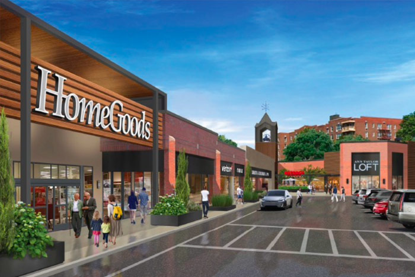

Everyday essentials close by
The Bay Club is minutes from the Bay Terrace Shopping Center, offering groceries, cafes, dining, fitness options and daily services in an open-air setting. Residents can run errands on foot, or drive to a broader set of Queens and Long Island destinations in under 20–30 minutes.
- Bay Terrace Shopping Center a short walk or drive away
- Cafes, restaurants and fitness options nearby
- Pharmacies, banks and daily-needs retailers